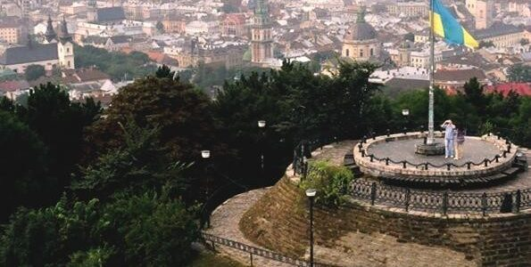

Високий Замок

Висо́кий За́мок — замок, збудований під керівництвом Короля Русі Лева Даниловича, потім — польського
короля Казимира III на Замковій горі у Львові. Майже повністю розібраний протягом XIX століття.
Зміст
- Iсторія
- Значення Високого Замку
- Наступ 11 жовтня
1649 1649
Iсторія
За архівними документами і науковою літературою Високий та Низький замки у Львові виникли в часи Галицько-Волинської держави.
З руських літописів і пізніших хронік XVI–XVII ст. (Яна Альнпека, Мартіна Ґруневеґа, Бартоломея Зиморовича) відомо, що на Замковій
горі під керівництвом князя Лева Даниловича збудували укріплення. Вони були дерев'яно-земляними, як і переважна більшість руських градів.
1259 року на вимогу хана Бурундая, укріплення були розібрані, але в 1270 році відбудовані наново. Львівський історик Бартоломей Зиморович
вважав цей рік датою первісного будівництва фортифікацій на Замковій горі. У 1340 році, коли Львів вперше був захоплений Казимиром ІІІ,
за словами хроніста Яна Длуґоша, було спалено дерев'яний замок. Повторно швидкоруч відновлений замок був спалений литовцями у 1353 році.
Значення Високого Замку
Стратегічне розташування так званої «замкової» або «княжої» гори оцінив ще в часи Галицько-Волинської держави князь Лев Данилович:
за нього, за даними польського історика і бургомістра Львова Юзефа Бартоломея Зиморовича-Озимека, проклали на гору дорогу та побудували
там тимчасове поселення, оточивши його дерев'яним частоколом та засіками[7]. Сам Лев Данилович мешкав у цьому поселенні лише одну зиму:
повернутися до міста князя змусило дуже холодна зима та гострі зимні вітри. Княжа гора, на котрій розмістився замок, є найвищою місциною
міста Львова висотою 413 метрів над рівнем моря. З неї проглядається майже все місто та підступи і шляхи до нього. Лев Данилович свого часу
перевіз до замку скарбницю міста на випадок війни та наказав її охороняти численним вартовим, що підкреслювало недоступність та стратегічне значення гори[8]
У княжі часи Замкову гору вкривав ліс, який з часом вирубали. Вирубування дерев призвело до того, що гора зяяла пусткою. У 1430-х років німецькі
мешканці Львова привезли із [Молдовське князівство|Молдови]] саджанці винограду й посадили на схилах Високого замку виноградники, які проіснували до осені
1648 року, коли їх понищили козаки Богдана Хмельницького[9]. Замкова гора мала стратегічне значення в обороні Львова, і якби ворогу вдалося захопити висоту,
то він міг би без перешкод розташувати там артилерію і вести прицільний гарматний обстріл міста, завдаючи великої шкоди насамперед оборонним фортифікаційним
спорудам, через що Львову загороджувала б капітуляція. Відомо також, що Високий замок окрім своїх прямих захисних функцій, виконував і функції шляхетської в'язниці
і сигнального пункту, з якого попереджали місто в тому разі якщо йому загрожувала небезпека, наприклад восени 1624 р. коли під Львів підійшли татарські війська,
замковий гарнізон 26 травня відкрив вогонь з гармат, тим самим даючи сигнал гарнізону міста про підхід ворожих сил[10].
Наступ 11 жовтня 1649 1649
У неділю зранку селяни знову почали атаку на Високий замок, ще з більшою завзятістю[35]. Козаки з кримськими татарами намагалися за допомогою 12 обложних
драбин оволодіти валами перед самим замком, але гарнізон добре відбивав вогнепальною зброєю козацькі атаки і не давав їм зайняти валів. Згодом, скоріш за все через нерівне
кількісне співвідношення обложених і нападників, козаки піднялися до самих стін, намагалися ламати їх кайлами, ломами, робили спроби виламати браму, натовпи нападників
намагалися забратися на стіни, робили підкопи. Гарнізон замку, котрий отримав уночі запас боєприпасів, за словами Самійла Кушевича: «боронився добре[37]». Не досягнувши
успіху нападники знову вимушені були відступити. Про втрати обох сторін у цей день невідомо.
У другій половині дня в замку стався інцидент, який значно вплинув на подальшу долю укріплення та його мешканців. Ситуація складалась наступним чином: залога Високого замку
страждала від браку води, тому, побоюючись самостійно йти по воду, солдати замкового гарнізону висилали цивільних мешканців, які були в межах замку, набирати воду з джерела на
Підзамче (котре існує і сьогодні)[38]. Під час однієї з таких вилазок, група переодягнених козаків видала себе за біженців і приєдналася до посланих по воду селян. Завдяки таким діям,
козаки могли потай відчинити браму своїм основним силам. Увесь цей план згодом був провалений, ударемнив його один з «поштових» селян, котрий, повернувшись до фортифікації, потай
розповів про козацький підступ бургграфові. З наступом ночі Ян Братсковський нічого не з'ясовуючи одразу надав наказ вишукувати всіх новоприбулих «біженців» під фортечним муром: у такий
спосіб було розстріляно і заколото близько 20 осіб. Як свідчать подальші події, перебити Братковському всіх козацьких «диверсантів» не вдалося[38].
Уже наступної ночі виявилося, що хтось непомітно зацвяхував кілька гармат і понамочували запали для бомб, залив водою гарматні порохові ґноти.
Підозра одразу впала на українських мешканців, що не було дивним, зважаючи на неприховану ворожість, яку щодо них демонстрував гарнізон. Ян Братковський ніяких
дій проти українців не робив, усвідомлюючи яку загрозу можуть нести обороноздатності замку українські селяни, не наважився вигнати їх за мури. Згодом він
обґрунтовував цей крок тим, що побоювався відкритого бунту й нападу на його людей, який міг би статися після вигнання українців. Становище залоги тільки погіршилося, оскільки солдатам доводилося пильнувати не тільки за козаками, а й за «внутрішнім ворогом[22]»
Недільній штурм тривав цілий день, але дістатися цілі нападникам знову не вдалося, вони відступили та знову повернулися до підніжжя Замкової гори, але
потрібно наголосити на тому, що після кожної козацької атаки на замок, його гарнізон витрачав більше припасів, яких бракувало ще в минулі дні облоги, таким
чином становище замку становилося критичнішим з кожним відбиттям ворожої атаки.